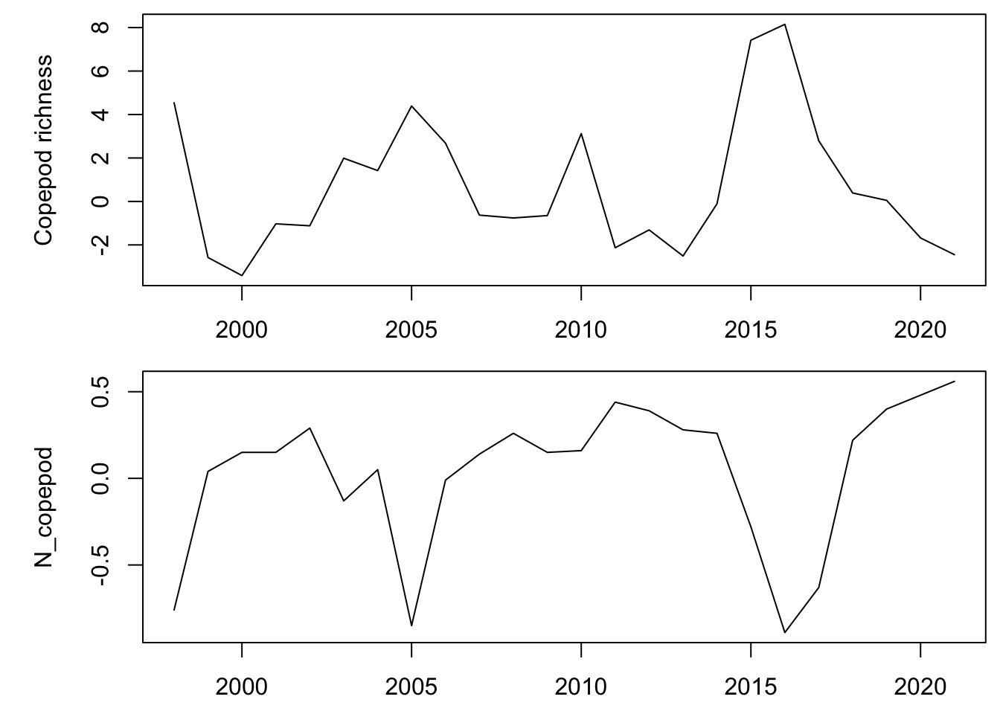
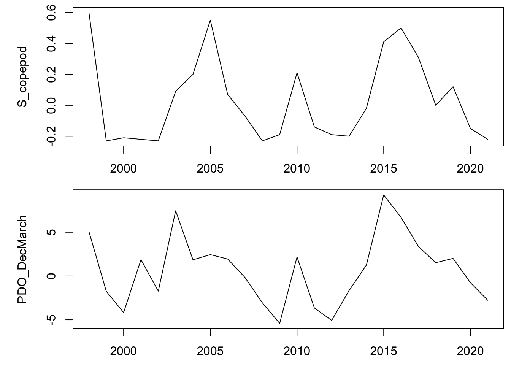

Here we will examine a model fitting 3 different local copepod metrics - copepod richness, northern copepod biomass, and southern copepod biomass - across the entire available time series. After spending some time looking at the time-series patterns prior to model fitting, we would also like to evaluate the effect of Pacific Decadal Oscillation (PDO) from December to March as a covariate on both the state and transition. We will evaluate both a 2 and 3 state model with 1 covariate.
Note
The variables we chose were already de-meaned. We did not zscore the data.
Load the data
Wrangle the data
Code
rownames(stoplight) <- stoplight[,1]subset_data <- stoplight[c("Copepod_richness","N_copepod","S_copepod","PDO_DecMarch"),3:26]#column names should be yearscolnames(subset_data) <-seq(1998,2021)par(mfrow =c(2,1), mai =c(0.5, 1, 0.1, 0.1), omi =c(0, 0, 0, 0))plot(seq(1998,2021),subset_data["Copepod_richness",], type ="l", xlab ="years", ylab ="Copepod richness")plot(seq(1998,2021),subset_data["N_copepod",], type ="l", xlab ="years", ylab ="N_copepod")

Code
plot(seq(1998,2021),subset_data["S_copepod",], type ="l", xlab ="years", ylab ="S_copepod")plot(seq(1998,2021),subset_data["PDO_DecMarch",], type ="l", xlab ="years", ylab ="PDO_DecMarch")

Univariate test
We will start by looking at copepod richness.
Code
data <-data.frame(t(subset_data))fitmod <-depmix(Copepod_richness ~1,nstates =2,transition =~1,family =gaussian(),data = data)
Code
set.seed(123)fit1 <-fit(fitmod)
converged at iteration 18 with logLik: -54.68034
Code
pars <-getpars(fit1)matrix(pars[3:6], 2, 2, byrow =TRUE)
Warning in .local(object, ...): Argument 'type' not specified and will default
to 'viterbi'. This default may change in future releases of depmixS4. Please
see ?posterior for alternative options.
plot(subset_multi$variable, scale(apply(posterior(fitmod2_1) [,c("S1", "S2")], 1, which.max)),ylab="probability",frame=FALSE, ylim =c(-1,4), type ="l")
Warning in .local(object, ...): Argument 'type' not specified and will default
to 'viterbi'. This default may change in future releases of depmixS4. Please
see ?posterior for alternative options.
Warning in em.depmix(object = object, maxit = emcontrol$maxit, tol =
emcontrol$tol, : Log likelihood decreased on iteration 7 from -9.99923565186817
to -28.8461160684358
Code
summary(fitmod3_2, which ="transition")
Transition model for state (component) 1
Model of type multinomial (mlogit), formula: ~scale(PDO_DecMarch)
Coefficients:
St1 St2 St3
(Intercept) 0 -2.050474 -3.214950
scale(PDO_DecMarch) 0 2.953207 -1.822716
Probalities at zero values of the covariates.
0.8555555 0.1100877 0.03435684
Transition model for state (component) 2
Model of type multinomial (mlogit), formula: ~scale(PDO_DecMarch)
Coefficients:
St1 St2 St3
(Intercept) 0 -54.41624 37.84036
scale(PDO_DecMarch) 0 41.09343 -66.67456
Probalities at zero values of the covariates.
3.682484e-17 8.579654e-41 1
Transition model for state (component) 3
Model of type multinomial (mlogit), formula: ~scale(PDO_DecMarch)
Coefficients:
St1 St2 St3
(Intercept) 0 168.3578 -23.28767
scale(PDO_DecMarch) 0 -549.4447 22.56400
Probalities at zero values of the covariates.
7.640487e-74 1 5.880508e-84
Transition model for state (component) 1
Model of type multinomial (mlogit), formula: ~scale(PDO_DecMarch)
Coefficients:
St1 St2 St3
(Intercept) 0 -17.85489 -4.781335
scale(PDO_DecMarch) 0 17.24089 -3.743735
Probalities at zero values of the covariates.
0.9916849 1.7462e-08 0.008315076
Transition model for state (component) 2
Model of type multinomial (mlogit), formula: ~scale(PDO_DecMarch)
Coefficients:
St1 St2 St3
(Intercept) 0 8.9955148 10.143213
scale(PDO_DecMarch) 0 0.4125162 0.253309
Probalities at zero values of the covariates.
2.986338e-05 0.2409025 0.7590676
Transition model for state (component) 3
Model of type multinomial (mlogit), formula: ~scale(PDO_DecMarch)
Coefficients:
St1 St2 St3
(Intercept) 0 -356.4094 -42.687862
scale(PDO_DecMarch) 0 -235.1345 2.774884
Probalities at zero values of the covariates.
1 1.634432e-155 2.889994e-19
Warning in .local(object, ...): Argument 'type' not specified and will default
to 'viterbi'. This default may change in future releases of depmixS4. Please
see ?posterior for alternative options.
Based on the AIC values, the best model for assessing our subset of copepod data is the multivariate 3 state HMM model with covariate effects on the state parameters.
Results / Discussion
Does it converge?
Yes, all our models converge.
How many states seem to be most supported?
An HMM model with 3 states is the most supported by AIC comparison but the fit looks better with a 2 state model.
What does this mean? - The 3 state model shows that shows a smooth transition between states 1 - 3. While the transition probabilities below show that it is possible for the model to jump from state 3 to state 1, the opposite is not true (probability of moving from state 1 to state 3 is zero). This is reflected when plotting the likely states. It is more likely to switch smoothly between the states over time, which makes sense when considering the influence of PDO - which indicates an overall warm or cool phase of ocean activity. It is more likely that temperature fluctuations have smooth transitions than drastic jumps over a large time scale, and this is reflected in the 3 state model. It also explains why the 2 state model with the same covariate effects also fits the data well - eliminating the middle state from a time series with smooth transitions shouldn’t drastically effect the model.
What are the transition probabilities? - Our transition matrix for the 3 state model:
If included, what are the covariate effects? What do these mean? - We evaluated the effect of the climate covariate Pacific Decadal Oscillation (PDO) from December to March and found that PDO allowed the HMM model to have a better fit to the data when influencing the state process.
Anything else interesting that you’ve discovered? - In both the 2 and 3 state HMM models, the covariate effects were best explained as state effects.
Team contributions
Miranda and Maria both decided on the variables and covariates to test. Maria fit the 2 state model and Miranda fit the 3 state model. Miranda drafted the contributions into a final report. Maria wrote the discussion and finalized the report.
Source Code
---title: "Team 2 - Lab 4"subtitle: "Hidden Markov Models"author: "Maria Kuruvilla, Miranda Mudge"date: May 9, 2023output: html_document: code-folding: true toc: true toc_float: trueeditor_options: markdown: wrap: sentence---```{r setup, include = FALSE}options(dplyr.summarise.inform = FALSE)```# DataHere we will examine a model fitting 3 different local copepod metrics - copepod richness, northern copepod biomass, and southern copepod biomass - across the entire available time series.After spending some time looking at the time-series patterns prior to model fitting, we would also like to evaluate the effect of Pacific Decadal Oscillation (PDO) from December to March as a covariate on both the state and transition.We will evaluate both a 2 and 3 state model with 1 covariate.## NoteThe variables we chose were already de-meaned.We did not zscore the data.## Load the data```{r load_data, include=FALSE}library(depmixS4)library(tidyverse)stoplight <- read.csv(here::here("Lab-4", "stoplight.csv"))```## Wrangle the data```{r wrangle_data}rownames(stoplight) <- stoplight[,1]subset_data <- stoplight[c("Copepod_richness","N_copepod","S_copepod","PDO_DecMarch"),3:26]#column names should be yearscolnames(subset_data) <- seq(1998,2021)par(mfrow = c(2,1), mai = c(0.5, 1, 0.1, 0.1), omi = c(0, 0, 0, 0))plot(seq(1998,2021),subset_data["Copepod_richness",], type = "l", xlab = "years", ylab ="Copepod richness")plot(seq(1998,2021),subset_data["N_copepod",], type = "l", xlab = "years", ylab ="N_copepod")plot(seq(1998,2021),subset_data["S_copepod",], type = "l", xlab = "years", ylab ="S_copepod")plot(seq(1998,2021),subset_data["PDO_DecMarch",], type = "l", xlab = "years", ylab ="PDO_DecMarch")```# Univariate testWe will start by looking at copepod richness.```{r}data <-data.frame(t(subset_data))fitmod <-depmix(Copepod_richness ~1,nstates =2,transition =~1,family =gaussian(),data = data)``````{r}set.seed(123)fit1 <-fit(fitmod)pars <-getpars(fit1)matrix(pars[3:6], 2, 2, byrow =TRUE)AIC1 <-AIC(fitmod)```Here we look at the effect of 1 covariate on copepod richness.```{r}fitmod_cov <-depmix(Copepod_richness ~1+ PDO_DecMarch,nstates =2,transition =~1,family =gaussian(),data = data)``````{r}set.seed(123)fit_cov <-fit(fitmod_cov)pars_cov <-getpars(fit_cov)matrix(pars_cov[3:6], 2, 2, byrow =TRUE)AIC_cov <-AIC(fitmod_cov)```# Reframe multivariate datasetWrangle data to multivariate subset.```{r}subset_data_l <- subset_datasubset_data_l$ID <-rownames(subset_data_l)subset_data_long <- subset_data_l %>%pivot_longer(!ID, names_to ="variable",values_to ="value")subset_multi <-pivot_wider(subset_data_long, names_from = ID, values_from = value, names_repair ="check_unique")```# HMM on 2 statesBasic 2 state model```{r}set.seed(123)mod2_1 =depmix(list(Copepod_richness ~1, N_copepod~1, S_copepod~1), nstates =2, family =list(gaussian(),gaussian(),gaussian()),data=subset_multi)fitmod2_1 =fit(mod2_1)AIC2_1 =AIC(fitmod2_1)``````{r}prstates =apply(posterior(fitmod2_1)[,c("S1","S2")], 1, which.max)plot(prstates, type="b", xlab="Time", ylab="State")``````{r}plot(subset_multi$variable, scale(apply(posterior(fitmod2_1) [,c("S1", "S2")], 1, which.max)),ylab="probability",frame=FALSE, ylim =c(-1,4), type ="l")points(subset_multi$variable,scale(subset_multi$Copepod_richness))```HMM with 2 states and covariate```{r}set.seed(123)mod2_2 =depmix(list(Copepod_richness ~ PDO_DecMarch, N_copepod~ PDO_DecMarch, S_copepod~PDO_DecMarch), nstates =2, family =list(gaussian(),gaussian(),gaussian()),data=subset_multi)fitmod2_2 =fit(mod2_2)AIC2_2 =AIC(fitmod2_2)```Covariate in the transition probabilty```{r}set.seed(123)mod2_3 =depmix(list(Copepod_richness ~1, N_copepod ~1, S_copepod ~1), nstates =2, transition =~PDO_DecMarch,family =list(gaussian(),gaussian(),gaussian()),data=subset_multi)fitmod2_3 =fit(mod2_3)AIC2_3 =AIC(fitmod2_3)```# HMM on 3 statesBasic 3 state model```{r}set.seed(123)mod3_1 =depmix(list(Copepod_richness ~1, N_copepod~1, S_copepod~1), nstates =3, family =list(gaussian(),gaussian(),gaussian()),data=subset_multi)fitmod3_1 =fit(mod3_1)AIC3_1 <-AIC(fitmod3_1)```## Effect of covariate on transition parameters3 state model with covariate effects on transition parameters```{r}set.seed(123)mod3_2 =depmix(list(Copepod_richness ~1, N_copepod~1, S_copepod~1), nstates =3, family =list(gaussian(),gaussian(),gaussian()),transition =~scale(PDO_DecMarch),data=subset_multi)fitmod3_2 =fit(mod3_2)summary(fitmod3_2, which ="transition")summary(fitmod3_2, which ="response")AIC3_2 <-AIC(fitmod3_2)```3 state model with covariate effects on state parameters```{r}set.seed(123)mod3_3 =depmix(list(Copepod_richness ~1+PDO_DecMarch, N_copepod~1+PDO_DecMarch, S_copepod~1+PDO_DecMarch), nstates =3, family =list(gaussian(),gaussian(),gaussian()),data=subset_multi)fitmod3_3 =fit(mod3_3)summary(fitmod3_3, which ="transition")summary(fitmod3_3, which ="response")AIC3_3 <-AIC(fitmod3_3)```3 state model with covariate effects on state and transition parameters```{r}set.seed(123)mod3_4 =depmix(list(Copepod_richness ~1+PDO_DecMarch, N_copepod~1+PDO_DecMarch, S_copepod~1+PDO_DecMarch), nstates =3, family =list(gaussian(),gaussian(),gaussian()),transition =~scale(PDO_DecMarch),data=subset_multi)fitmod3_4 =fit(mod3_4)summary(fitmod3_4, which ="transition")summary(fitmod3_4, which ="response")AIC3_4 <-AIC(fitmod3_4)``````{r}AIC2_1AIC2_2AIC2_3AIC3_1AIC3_2AIC3_3 # best model AIC3_4``````{r}print(fitmod3_3)```Plotting the 3 state model```{r}prstates =apply(posterior(fitmod3_3)[,c("S1","S2", "S3")], 1, which.max)plot(prstates, type="b", xlab="Time", ylab="State")```Based on the AIC values, the best model for assessing our subset of copepod data is the multivariate 3 state HMM model with covariate effects on the state parameters.# Results / DiscussionDoes it converge?- Yes, all our models converge.How many states seem to be most supported?- An HMM model with 3 states is the most supported by AIC comparison but the fit looks better with a 2 state model.Plot the time series of estimated states.```{r warning=FALSE}prstates = apply(posterior(fitmod3_3)[,c("S1","S2", "S3")], 1, which.max)plot(subset_multi$variable,scale(apply(posterior(fitmod3_3)[,c("S1","S2", "S3")], 1, which.max)), xlab="Time", ylab="State", type = "b")points(subset_multi$variable,scale(subset_multi$Copepod_richness), pch = 19)```What does this mean?- The 3 state model shows that shows a smooth transition between states 1 - 3.While the transition probabilities below show that it is possible for the model to jump from state 3 to state 1, the opposite is not true (probability of moving from state 1 to state 3 is zero).This is reflected when plotting the likely states.It is more likely to switch smoothly between the states over time, which makes sense when considering the influence of PDO - which indicates an overall warm or cool phase of ocean activity.It is more likely that temperature fluctuations have smooth transitions than drastic jumps over a large time scale, and this is reflected in the 3 state model.It also explains why the 2 state model with the same covariate effects also fits the data well - eliminating the middle state from a time series with smooth transitions shouldn't drastically effect the model.What are the transition probabilities?- Our transition matrix for the 3 state model: \begin{bmatrix}0.66 & 0.33 & 0 \\0.5 & 0 & 0.5 \\0.4 & 0.4 & 0.2 \\\end{bmatrix}If included, what are the covariate effects?What do these mean?- We evaluated the effect of the climate covariate Pacific Decadal Oscillation (PDO) from December to March and found that PDO allowed the HMM model to have a better fit to the data when influencing the state process.Anything else interesting that you've discovered?- In both the 2 and 3 state HMM models, the covariate effects were best explained as state effects.# Team contributionsMiranda and Maria both decided on the variables and covariates to test.Maria fit the 2 state model and Miranda fit the 3 state model.Miranda drafted the contributions into a final report.Maria wrote the discussion and finalized the report.